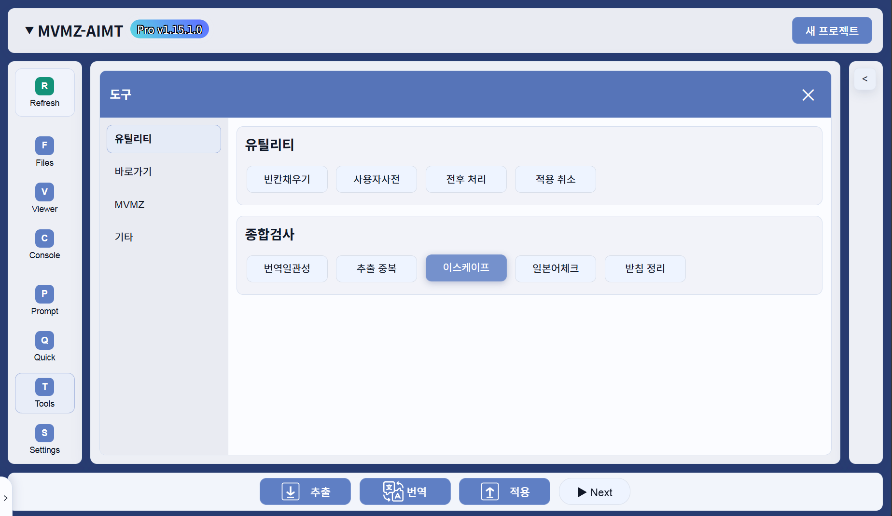

이스케이프
문서 기준: AIMT PRO 1.16 계열
최종 편집 일시: 2026-06-22
이 기능은 설정 > 기타 > Escape Diff Viewer 옵션의 영향을 받습니다.
옵션이 켜져있다면 AIMT 내장 뷰어로, 그렇지 않다면 외부 프로그램 WinMerge 로 연결됩니다.



이 도구는 무엇인가요?
이스케이프는 원문 추출 결과와 번역 결과를 비교해 제어문자, 태그, 이스케이프 패턴이 번역 중 손상되었는지 검사하는 도구입니다. 일부 공백과 문장부호 문제는 번역 결과에 직접 보정하고, 이스케이프 불일치가 있는 항목은 확인용 결과 파일로 따로 만들어 비교할 수 있게 합니다.
언제 사용하나요?
- 적용 전에 제어코드나 태그가 원문과 같은 구조로 남아 있는지 확인할 때
- 게임 화면에
_CTRL같은 임시 표식이나<c0/>형태의 태그가 그대로 보일 때 - 번역 후 앞쪽 전각공백, 후행 공백, 닫는 문장부호 위치가 의심될 때
이스케이프패턴설정을 바꾼 뒤 검사 결과를 다시 확인할 때
사용 전 확인할 것
- 이 기능은 외부 무료 소프트웨어 WinMerge 를 활용합니다. WinMerge 가 설치된 환경에서만 온전히 이용할 수 있습니다.
- 추출 결과와 번역 결과가 모두 준비되어 있어야 합니다.
- 일반 엔진에서는 System, Event, data 계열의 원문/번역 파일 쌍을 검사합니다.
- 시나리오 계열에서는 Scenario 계열을 중심으로 검사하며, 일부 엔진은 System 계열도 함께 검사할 수 있습니다.
- 검사 시작 시 이전 Check 결과는 새 결과와 섞이지 않도록 정리됩니다.
- 원문과 번역문의 구조나 항목 수가 크게 다르면 해당 파일은 검사에서 제외될 수 있습니다.
- 이스케이프 (data)는 원본 게임 data 폴더를 선택해 비교하는 별도 도구입니다.
기본 사용 순서
- 작업 도구에서 이스케이프를 실행합니다.
- AIMT가 현재 엔진에 맞는 일반/시나리오 검사 범위를 선택합니다.
- CMD 화면의 진행 메시지를 확인합니다.
- 완료 메시지에서 처리 파일 수, 수정 파일 수, 전체 라인 수, 수정 라인 수를 확인합니다.
- 수정 라인이 있으면 비교 바로가기가 열리는지 확인합니다.
- 비교 화면에서 번역 결과와 Check 결과의 차이를 확인합니다.
- 필요한 항목만 번역 결과에 반영한 뒤 적용하고 게임에서 확인합니다.
화면/항목 설명
| 검사 대상 | 추출 결과의 원문 JSON과 번역 결과 JSON 중 같은 이름의 파일 쌍입니다. |
|---|---|
| 이스케이프 비교 | 원문과 번역문을 이스케이프 패턴 기준으로 나누어 누락되거나 추가된 패턴이 있는지 확인합니다. |
| 임시 표식 검사 | 원문에는 없는데 번역문에 _CTRL, <c0/>, <s0/>, <p0/> 같은 표식이 남았는지 확인합니다. |
| 공백 보정 | 원문 앞에 있던 전각공백이 번역문에서 부족하면 맞춰 줍니다. 후행 공백 제거는 관련 설정이 켜져 있을 때 적용됩니다. |
| 문장부호 보정 | 문장 맨 앞에 잘못 붙은 닫는 괄호류 문장부호를 문장 뒤로 옮깁니다. |
| Check 결과 | 이스케이프 불일치가 있는 항목은 원문 기준으로 복원한 확인용 파일을 만들어 번역 결과와 비교할 수 있게 합니다. |
결과 확인 방법
- 수정 라인 수가 0이면 검사 범위에서 자동 보정하거나 Check로 분리할 항목이 없었다는 뜻입니다.
- 수정 라인 수가 0보다 크면 Check 결과와 번역 결과를 비교해 어떤 항목이 달라졌는지 확인합니다.
- 전각공백, 후행 공백, 문장부호 보정은 번역 결과에 직접 저장될 수 있습니다.
- 이스케이프 불일치 항목은 확인용 결과에 원문 기준 복원안으로 저장됩니다. 필요한 내용만 실제 번역 결과에 반영하세요.
- 마지막에는 게임을 실행해 제어문자, 변수, 색상 태그, 줄바꿈이 실제 화면에서 깨지지 않는지 확인합니다.
주의/중요/권장
Check 결과는 그대로 전부 덮어쓰라는 뜻이 아닙니다. 이스케이프가 깨진 항목을 안전하게 비교하기 위한 확인용 결과로 보고, 필요한 항목만 반영하세요.
전각공백과 일부 문장부호 보정은 번역 결과 파일에 직접 저장될 수 있습니다. 실행 전후 차이를 확인할 수 있도록 작업 범위를 관리하세요.
이스케이프 오류는 적용 실패보다 게임 실행 중 표시 깨짐으로 드러나는 경우가 많습니다. 적용 전 검사하고, 적용 후 실제 화면도 함께 확인하세요.
자주 헷갈리는 점
이스케이프 (data)와 같은 기능인가요?
아닙니다. 이 페이지의 이스케이프는 AIMT의 추출 결과와 번역 결과를 비교합니다.
MVMZ 의 이스케이프 (data)는 사용자가 선택한 원본 data 폴더와 현재 프로젝트 data를 비교하는 별도 도구입니다.
Check 결과가 생기면 자동으로 적용된 건가요?
아닙니다. Check 결과는 비교와 검수용입니다. 필요한 차이를 확인한 뒤 실제 번역 결과나 적용 결과에 반영해야 합니다.
수정 라인이 0이면 검수가 끝난 건가요?
아닙니다. 이스케이프 기준으로 발견된 문제가 없다는 뜻입니다. 오역, 누락, 줄 길이, 화면 넘침은 별도로 확인해야 합니다.